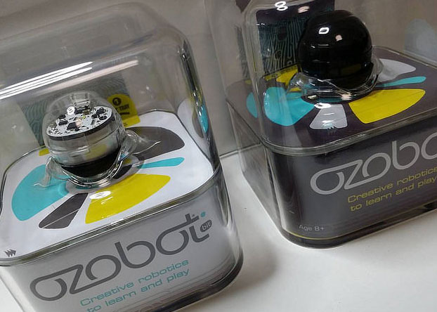
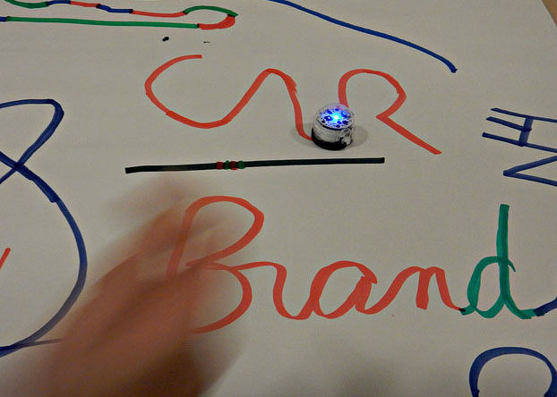
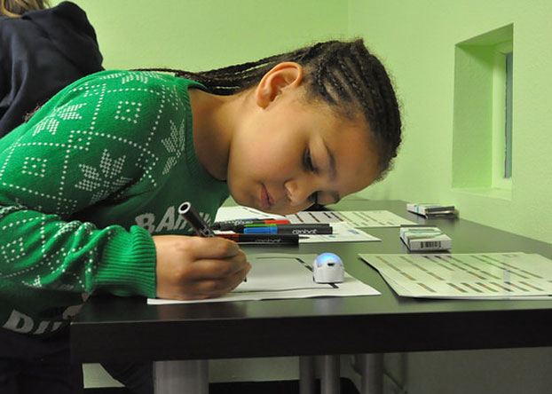

Codes im Alltag wie z.B. Morse-, Binär-, Bar- und QR-Code
ASCII und Unicode als praktisches Beispiel
Ausblick: Anwendung und Umrechnung von Binär-Codes und anderen Zahlendarstellungen
Let’s get ready to rumble – Themen II
Mit welchen Themen wollen wir uns beschäftigen?
Coding mit Ozobots
Eigene Parcours mit Farbmarkern erstellen
Ausblick: Eigene Programme mit Ozoblockly entwickeln



The juicy details II – Lernziele und Kompetenzen
Welche Lernziele und Kompetenzen sollen erreicht werden?
Wissen, dass in technischen Systemen Codes vorwiegend zur Darstellung von Nachrichten – d.h. endlichen Folgen von Signalen bzw. Informationen – dienen.
Verstehen, dass in der Informatik je nach Anwendungsgebiet verschiedene Codes mit unterschiedlichen Eigenschaften verwendet werden.
Codes im Alltag erkennen und passend verwenden und selber erstellen können.